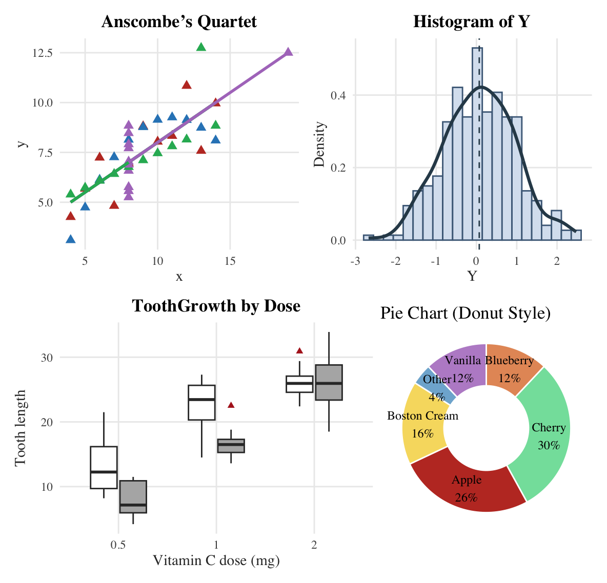

Assignment 3 — Base R and ggplot2
1. Rerun murrell01.R
The six classic base R plots were recreated and displayed together in a 3×2 layout.
The figure below includes:
- A manually constructed scatterplot (“Bird 131”) with customized axes and dual labels.
- A histogram showing normally distributed data with a superimposed normal curve.
- A stacked bar chart for the VADeaths dataset with values labeled within each segment.
- Boxplots comparing ToothGrowth length by supplement type (OJ vs VC) and dose.
- A 3D perspective surface generated using the persp() function.
- A pie chart illustrating category shares using a gray tone color ramp.

1(a) Explain one chart — Boxplot (ToothGrowth)
I chose the ToothGrowth boxplot. It compares tooth length across Vitamin C doses (0.5, 1, 2 mg) and supplement type (OJ vs VC).
Each box shows the median (center line) and IQR (box height), with whiskers extending to data within 1.5×IQR; any points beyond would be outliers.
From the figure, tooth length increases with dose, and at lower doses (0.5, 1 mg), OJ often shows higher medians than VC; by 2 mg, the two supplements are similar, indicating a diminishing difference at the highest dose.

2. Rerun anscombe01.R
2(a) Compare the regression models
All four datasets in Anscombe’s Quartet produce nearly identical regression statistics — similar slopes, intercepts, and (R^2) values (approximately 0.67).
However, their visual patterns are completely different.
Set 1 represents a true linear relationship, Set 2 has a curved (nonlinear) trend, Set 3 contains a strong outlier that influences the regression, and Set 4 includes one high-leverage point that distorts the fitted line.
This demonstrates that numerical summaries alone can be misleading and highlights the importance of data visualization.
2(b) Compare different plotting styles
The first figure shows the default base plots for the four Anscombe datasets, while the second uses customized colors, symbols, and line types for clearer differentiation and readability.
Comparison paragraph:
The styled version communicates the differences between datasets much more effectively.
In Set 1, the linear trend is clear; in Set 2, curvature is visible; in Set 3, an outlier becomes obvious; and in Set 4, one leverage point dominates.
This comparison shows that thoughtful visual design — through colors, line types, and shapes — enhances interpretability and brings out patterns hidden in plain summaries.
3. Finetune the charts (Base R only)
This section demonstrates how base R graphics can be refined without additional packages.
All charts below were customized using:
- Serif fonts for a more professional look,
- Non-default colors to increase visual contrast, and
- A custom plotting symbol (pch = 17) for distinctive markers.
The resulting grid contains a clean scatterplot, a histogram with density and mean reference, a boxplot with jittered points, and a soft-toned pie chart.
4. ggplot2 (tidyverse)
The same four visualizations were recreated using ggplot2, ensuring consistent theming and improved readability.
This layout displays:
1. Anscombe’s Quartet with regression lines for each dataset.
2. A histogram of random normal data with density and mean line.
3. Boxplots for ToothGrowth by supplement and dose.
4. A donut-style pie chart visualizing flavor proportions.

Comparison of All Four Anscombe Datasets (in One Figure)
This combined plot displays all four Anscombe datasets in a single faceted layout for direct comparison.
Each panel includes its own regression line, revealing that although all datasets share nearly identical regression summaries, their actual distributions and relationships differ drastically:
- Set 1: Linear trend.
- Set 2: Nonlinear curvature.
- Set 3: Outlier influencing slope.
- Set 4: High-leverage point altering the fit.

This clearly illustrates the famous message of Anscombe’s Quartet — data visualization is essential to understand the true nature of relationships beyond numbers.